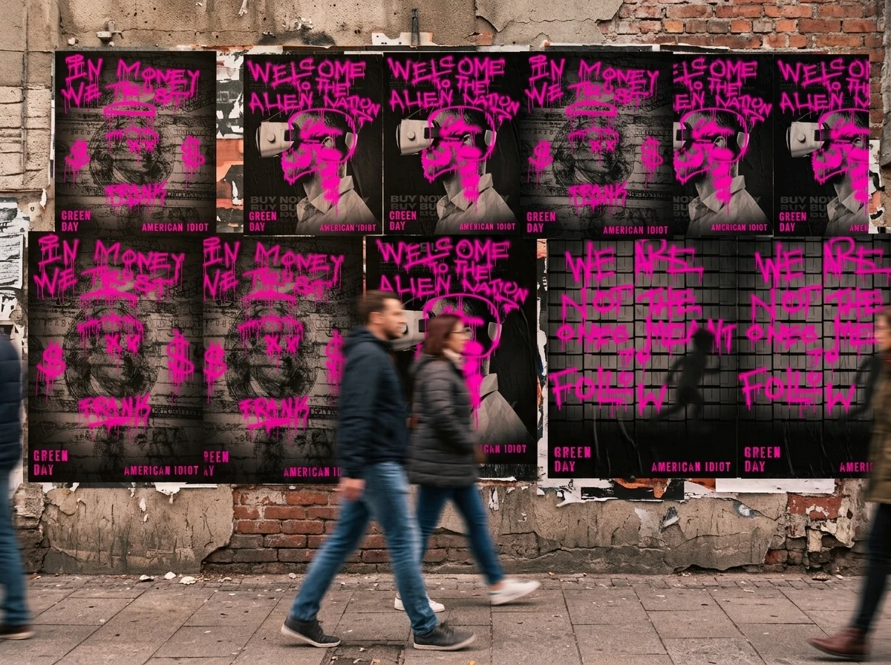
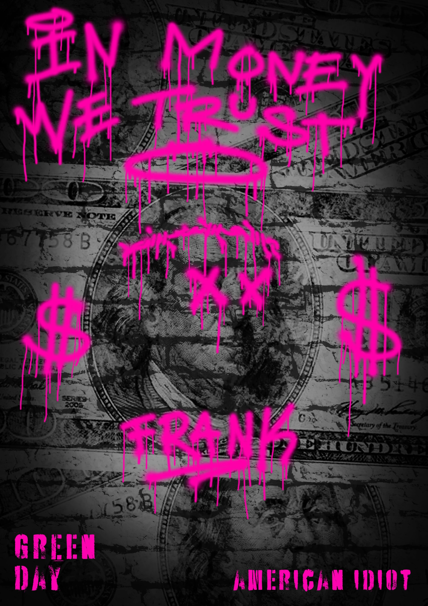
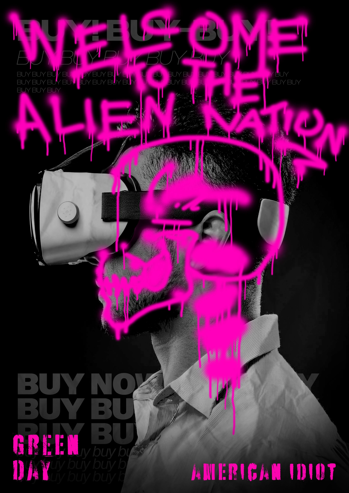
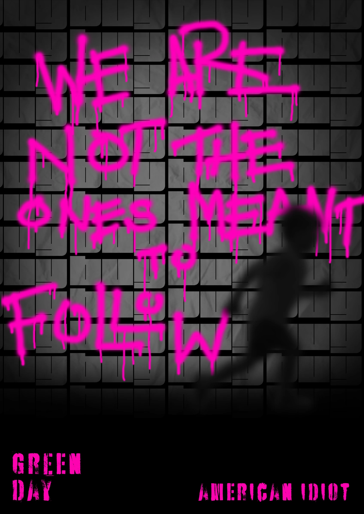

American Idiot
Este projeto nasceu da proposta de criar uma nova capa para o álbum American Idiot, do Green Day, reinterpretando visualmente as críticas presentes em sua obra. O ponto de partida foi a ideia de questionar o American Dream e a forma como a sociedade e a cultura americana são representadas.
A estética busca traduzir a energia intensa e provocativa do álbum por meio de uma composição forte, explorando elementos visuais que remetem à rebeldia, à insatisfação e à alienação social. A tipografia e as texturas reforçam essa atmosfera, criando uma identidade visual que dialoga com o caráter contestador das músicas.
O projeto procura transformar essas críticas em uma experiência visual, utilizando o contraste e a intensidade gráfica para representar o conflito entre o ideal americano e a realidade apresentada pelo álbum.
Assim, a nova capa funciona como uma extensão dos conceitos presentes em American Idiot, transmitindo visualmente a mesma sensação de inquietação, crítica e rebeldia presente na energia do álbum.





